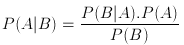
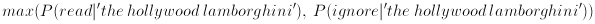
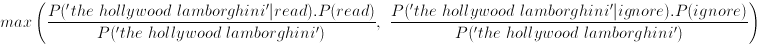
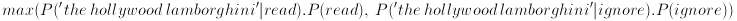
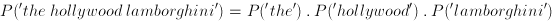
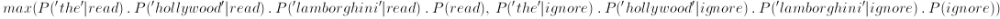

our last experiement in seeing whether a word exists in a feed does pretty well, but can we do better? lets the tried and true machine learning classification technique of naive bayes (it's bayes because it makes use of that cornerstone of probability, bayes theorem i'll describe why iit's naive in a bit)
furthermore 80% success from our last experiment is too good, lets make the problem harder! we'll introduce articles from another new feed, the auto industry related autoblog.com and change the rules to be that...
a quick peek at our collected data shows...
| rss feed | total articles | articles with the word 'lamborghini' |
| theregister | 5,000 | 1 |
| perezhilton | 4,800 | 2 |
| autoblog | 3,600 | 98 |
let's work through an example
consider the articles below (our training data) and whether we should read them
| text | feed | should read it? |
| on the linux | the register | yes (rule 1) |
| cat on ferrari | autoblog | no |
| on the hollywood | perezhilton | no |
| lamborghini on cat | autoblog | yes (rule 2) |
| hollywood cat | perezhilton | no |
| the lamborghini | perezhilton | yes (rule 2) |
| cat on linux | the register | yes (rule 1) |
in terms of word occurences (we'll add word frequencies soon enough) our training data breaks down to
| text | on | the | linux | cat | ferrari | hollywood | lamborghini | read |
| on the linux | Y | Y | Y | N | N | N | N | Y |
| cat on ferrari | Y | N | N | Y | Y | N | N | N |
| on the hollywood | Y | Y | N | N | N | Y | N | N |
| lamborghini on cat | Y | N | N | Y | N | N | Y | Y |
| hollywood cat | N | N | N | Y | N | Y | N | N |
| the lamborghini | N | Y | N | N | N | N | Y | Y |
| cat on linux | Y | N | Y | Y | N | N | N | Y |
from our word occurence table we can determine some terribly exciting probabilites if P(X) denote the probability of X occuring, then we have decided read 4 of the 7 articles; so P(read) = 4/7 therefore we have decided to ignore the other 3; so P(ignore) = 3/7 how excitement!
we can also determine some probabilities relating the occurences of words to whether we should read or ignore if P(A|B) denotes the probability of event A occuring given event B has occured, then of the 4 articles to read 2 have the word 'lamborghini' so the probability of the word lamborghini given we decided to read the article, P('lamborghini'|read) = 2/4 of the 3 articles to ignore none have the word 'lamborghini' so the probability of the word lamborghini given we decided to ignore the article, P('lamborghini'|ignore) = 0/3 mind bending stuff indeed.
but who cares about stuff we already know, we're interested in stuff we don't know yet! so say we are given a new article, should we read it or not?
| text | feed | should read it? |
| the hollywood lamborghini | unknown | ? |
we are interested in two probabilities
so using the P(A|B) notation we're interesting in the maximum of the probabilties max(P(read|'the hollywood lamborghini'), P(ignore|'the hollywood lamborghini'))
but how do we relate our known probabilities (such as P('lamborghini'|read)) to this function?
enter the mighty bayes theorem! 
again the maximum we're looking for is  which, from bayes theorem, is equivalent to  since the denominators are the same all that we care about is  and, if we make the naive assumption that the probability of 'the', 'hollywood' and 'lamborghini' occuring in an article are totally independant we can say  which, if we substitute into our equality, gives us 
now, as luck would have it, these are the sort of probabilities we can determine from our test data as we saw earlier!
| probability | value |
| P('the'|read) | 2/4 |
| P('hollywood'|read) | 0/4 |
| P('lamborghini'|read) | 2/4 |
| P(read) | 4/7 |
| P('the'|ignore) | 1/3 |
| P('hollywood'|ignore) | 2/3 |
| P('lamborghini'|ignore) | 0/3 |
| P(ignore) | 3/7 |
substituting back into our max function gives max ( (2/4 . 0/4 . 2/4 . 4/7) , (1/3 . 2/3 . 0/3 . 3/7) ) = max ( (1/2 . 0 . 1/2. 4/7) , (1/3 . 2/3 . 0 . 3/7) ) = max ( 0 , 0 ) = 0 fail! those pesky 0's completely clobbered everything what to do?
it turns out laplace solved this one 200 or so years ago we can, errr, avoid the zeros by adding one to each numerators and by adding a compensation to the denominators this technique is called laplace's rule of succession
doing this for the P(A|B) probabilites we have
| probability | value | adjusted |
| P('the'|read) | 2/4 | 3/7 |
| P('hollywood'|read) | 0/4 | 1/7 |
| P('lamborghini'|read) | 2/4 | 3/7 |
| P(read) | 4/7 | |
| P('the'|ignore) | 1/3 | 2/6 |
| P('hollywood'|ignore) | 2/3 | 3/6 |
| P('lamborghini'|ignore) | 0/3 | 1/6 |
| P(ignore) | 3/7 |
now we have the function max ( (3/7 . 1/7 . 3/7 . 4/7) , (2/6 . 3/6 . 1/6 . 3/7) ) = max ( 0.0149 , 0.0119 ) = max ( 55% , 45% ) [normalisation]
so the probability of should read 55% just outweights the probability we should ignore 44% hence we should read this article. (phew, what a lot of work...)
lets quickly run through another example...
| text | feed | should read it? |
| the hollywood ferrari | unknown | ? |
| probability | value | adjusted |
| P('the'|read) | 2/4 | 3/7 |
| P('hollywood'|read) | 0/4 | 1/7 |
| P('ferrari'|read) | 0/4 | 1/7 |
| P(read) | 4/7 | |
| P('the'|ignore) | 1/3 | |
| P('hollywood'|ignore) | 2/3 | |
| P('ferrari'|ignore) | 1/3 | |
| P(ignore) | 3/7 |
gives max function max ( 3/7 . 1/7 . 1/7 . 4.7) , (1/3 . 2/3 . 1/3 . 3/7)) = max ( 0.0050 , 0.0317 ) = max ( 14% , 86% ) [normalisation] which is a strong indicator to ignore this article
firstly lets change how we have been running the tests a little instead of training a bit, testing a bit, etc we'll use a process called cross validation
in cross validation we break the set of articles into a number of groups, say 16 for each of the groups we train a classifier with the 15 other groups and then use the selected group for testing
so how does this algorithm run against the 13,500 articles we have for theregister, perezhilton and autoblog then? it turns out it's not as good as the much simpler version we tried previously in our last experiment
the graph to the left shows the accuracy of the three classification algorithms we discussed so far (thick lines denote the median performance of the algorithm over a number of runs crosses denote a cross validation run)
- the m-algorithm preforms the worst - naive bayes does better - but the best is still just considering word occurences
curious! just goes to show that you don't always need a complex solution.
while we're in a bayes mood let's try a slight variation on naive bayes called multinomial bayes
view the code at github.com/matpalm/rss-feed-experiments